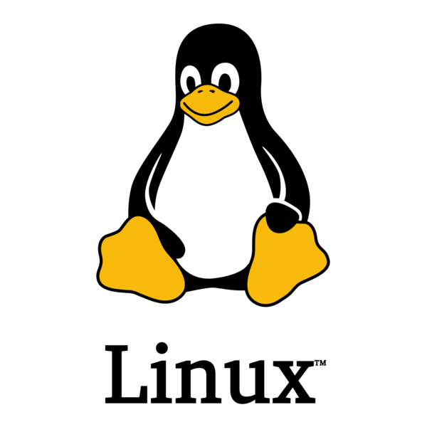

Active Directory
Authentication, delegation, trust relationships and enterprise attack paths.
Cybersecurity Student & Security Researcher.
I am a 15-year-old cybersecurity student from Elvas, Portugal. I currently study at Escola Secundária D. Sancho II and dedicate most of my free time to offensive security, systems, networking, hardware and technical writing.
This website is my public portfolio, technical notebook and research journal. I use it to document what I learn, publish projects and build a long-term body of work that reflects actual understanding rather than superficial tool knowledge.

My interest in cybersecurity started with a simple question: how does hacking actually work? That curiosity expanded into a broader interest in operating systems, networking, programming, hardware and exploitation. Instead of learning only the surface of tools, I prefer to understand the systems underneath them.
I live in Elvas and study at Escola Secundária D. Sancho II. My goal is to keep learning deeply while building practical experience through personal projects, research and hands-on study.
This site reflects that approach. Every note, weekly report and project exists to document progress, not to pretend expertise. That distinction matters more than most people want to admit.
I believe real expertise comes from understanding systems rather than memorising commands, tool names or attack checklists. Every technology has fundamental concepts behind it, and those fundamentals remain valuable long after the specific tool changes.
For that reason I prioritise theory, experimentation and documentation together. I study how systems work, test them in practice and then write about what I learned so the knowledge becomes durable instead of temporary.

Authentication, delegation, trust relationships and enterprise attack paths.
Internals, privilege boundaries, services, containers and system administration.
Protocols, routing, troubleshooting and packet-level understanding.
Basic hardware security, low-level behaviour and where software assumptions fail.
Automation, tooling and practical scripting for research and workflow improvement.
Reading advisories, analysing reports and writing technical notes with context.
Built the foundation for a public technical portfolio, knowledge base and weekly security publication.
Began structuring my learning process around technical notes, diagrams and research-driven documentation.
Started publishing weekly cybersecurity intelligence reports, focusing on relevant vulnerabilities, exploitation trends and defensive analysis.
I want to earn the eJPT at 16 as a milestone that validates practical penetration testing skills.
My plan is to study Cybersecurity at ESTG while gaining professional experience in the field.
My long-term objective is to become a Red Team professional, specialising in offensive security, enterprise environments and security research.
Before that, I want to earn the eJPT at 16, continue strengthening my fundamentals and develop enough technical depth to work in the field while studying.
I am especially interested in combining learning with real-world practice: project work, lab work, research, write-ups and eventually professional experience in the cybersecurity industry.
eJPT at 16.
Study Cybersecurity at ESTG, Polytechnic of Leiria.
Build professional experience while continuing to study and publish technical work.
One of my short-term goals is to earn the eJPT before turning 16. I see it as a practical checkpoint for validating offensive security fundamentals, lab methodology and the discipline required to keep progressing consistently.
The certification itself matters less than what it represents: structured study, hands-on practice and a clear milestone in a longer technical path.

My default environment and one of the main systems I study.
Essential for understanding traffic, services and real attack paths.
Used for tooling, automation and technical experiments.
Useful for workflow automation and system-level tasks.
A key area for enterprise offensive security.
Useful for understanding low-level assumptions and failure points.